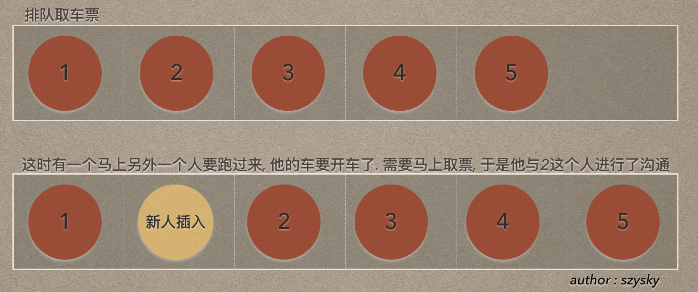
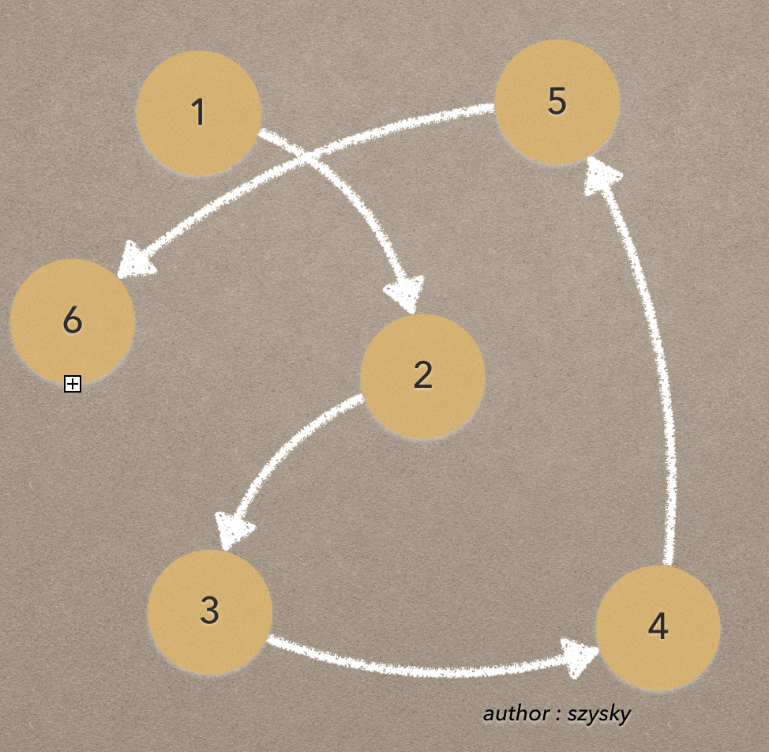
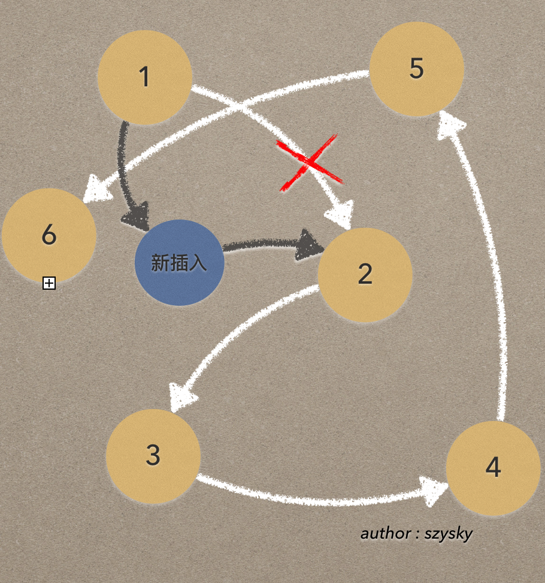

首先看一下线性表都包括哪些结构:

线性表的定义
零个或多个数据元素的有限序列.
序列: 说明了元素之间是由顺序的.有限: 泛指元素的个数为有限. 因为计算机中处理的对象都是有限的, 无限数列只存在数学的概念中.
线性表的元素个数为>=0. 当元素的个数为0. 这个表称之为空表.
线性表的特性
一个线性表应该具备哪些基本的功能呢?
置空查找插入删除长度
这是大体一个线性集合应该具有的抽象功能. 当然根据顺序结构,链表结构的不同. 具体实现的能力也是不同的.
顺序存储结构
线性表的顺序存储结构, 就是用一段
地址连续的存储单元依次存储线性表的数据元素. 如java中的ArrayList
例如ArrayList如果实现. 由于存储的元素都是相同类型的. 那么就可以使用一维数组来实现顺序存储结构.
既然使用了数组. 那么在最开始的时候需要先开辟内存空间. 也就是说需要先指定一个数组大小. 作为线性表的可存储的最大长度. 这也是顺序存储结构的劣势.
插入删除特点
插入

可以看到为了. 插入到位置2. 原来的2,3,4,5都要进行位置的移动. 如果这个排队只能进行5个人. 那么前面的插入会把第五个人踢出去. 那么这个时候第五个人肯定不干. 也就是对应着开发中的角标越界. 需要注意.
删除
同样删除元素, 会造成被删除元素位置的为空. 那么就需要后续的元素进行向前的补齐. 也就同样无关元素的位置移动.
优缺点
优点:- 无须为表中表中元素之间的逻辑关系而增加额外的存储空间
- 可以快速的存取表中
任意位置的元素. 时间复杂度O(1)
缺点插入和删除操作需要移动大量的元素. 时间复杂度O(n)- 当线性表长度变化较大时, 难以确定存储空间的容量
- 可能会造成存储空间的碎片存在
链式存储结构
顺序结构的特点: 是连续的开辟了一段内存空间.先分配后操作的特点. 让顺序结构变得有了局限性不是那么灵活. 而链式存储结构就是解决了这一问题的顺序结构.
看下图:

可以看出. 每个元素并不一定在内存中相邻的. 而是随意分配. 能实现这种效果是因为每个节点不仅存储了元素的信息, 还保存了下一个元素的内存地址 . 这样无论下一个节点在哪里. 都可以通过地址来进行操作. 而不是简单的如顺序存储结构只能想下一个地址位去查找.
一般链式存储结构中的头结点和尾节点比较特殊. 如果是单向链表尾节点的下一个元素位置一般为null或者空. 如果是双向链表那么头结点的上一个节点为空, 尾节点下一个元素为空.
所以我们只要知道了头结点那么就可以查找整个链式存储结构
插入删除特点
插入和删除是线性表的优势.
如下图:

同样是插入到2的位置. 这回只需要断开1~2之间的关系. 重新连接1,2,新元素的关系即可. 而其他元素不需要进行变换.
对于插入或删除数据越频繁操作, 单链表的效率优势就越明显. 因为插入和删除的操作由于只是单纯的修改位置指向. 所以时间复杂度仅仅是 O(1)
静态链表
主要是针对一些如Basic, Fortran等早期的高级语言. 由于没有了指针的概念. 有人就想出了用数组代替指针, 用来描述单链表. 活用链表的插入删除的高效性.
过程: 让数组的元素都是由两个数据域组成, data和cursor. 数据域data用来存放数据元素; 而cursor相当于单链表中的next指针, 存放该元素的后继在数组中的下标. 这就叫做静态链表或者游标实现法
循环链表
将单链表中
尾节点的指针端由空指针改为指向头结点. 是整个链表成为一个环. 这种头尾相接的单链表称为但循环链表简称单链表.
双向链表
单向链表有个问题. 就是当你在某一节点的时候. 你是无法直接删除该节点. 因为当前节点不知道上一个节点只是知道下一个节点. 所以这样会造成线性表的断裂.
双向链表是在单链表的每个节点中, 再设置一个指向其前驱节点的指针域.
单链表与顺序存储优缺点
存储方面:顺序存储结构用一段连续的存储单元依次存储线性表的数据元素单链表采用链式存储结构, 用一组任意的存储单元存放线性表元素
时间性能:查找- 顺序存储结构
O(1) - 单链表
O(n)
- 顺序存储结构
插入删除- 顺序存储结构需要平均移动表长一半的元素, 时间为
O(n) - 单链表在找出某个位置的指针后, 插入和删除仅为
O(1)
- 顺序存储结构需要平均移动表长一半的元素, 时间为
空间方面:- 顺序存储需要
预分配存储空间, 分大了浪费, 分小了容易发生空指针. - 单链表不需要分配. 只要需要就可以分配. 并且元素个数也不受限制.
- 顺序存储需要